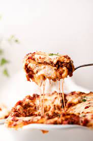

This is the recipe to create a lasagna dish.

This what you will need to make a delicious lasagna dish that my grandma would make
Ingredient List
- Pasta
- Tomato
- Water
- Pot
- Salt
- Cheese
- Tomato Sauce
- Ground Beef
- Pan
Step by step process
- First pour water in the pot and set it to boil.
- Throw pasta in the pot and then add salt.
- Once the pasta is nice and soft, strain the water out and set it to the side.
- Cook the ground beef. Make sure to add your favorite seasoning.
- Start by layering the pasta then sauce then cheese then ground beef in this order in layers until the pan is filled to the top
- Throw in the oven at 400 degrees until golden brown.
- Let it cool for 5 minutes. Enjoy.